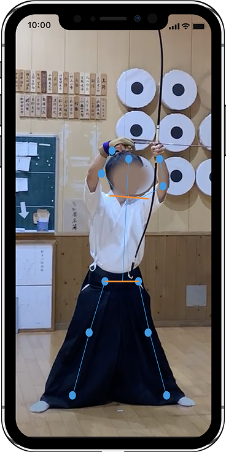
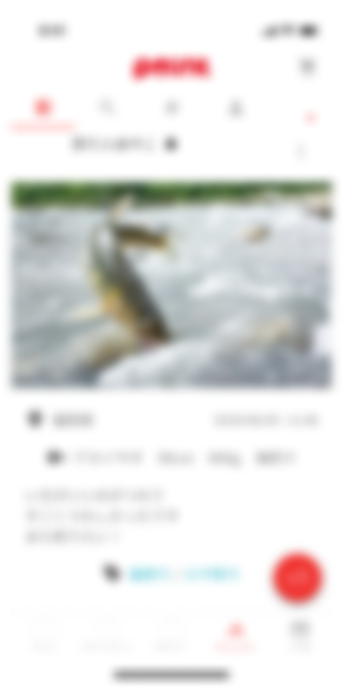
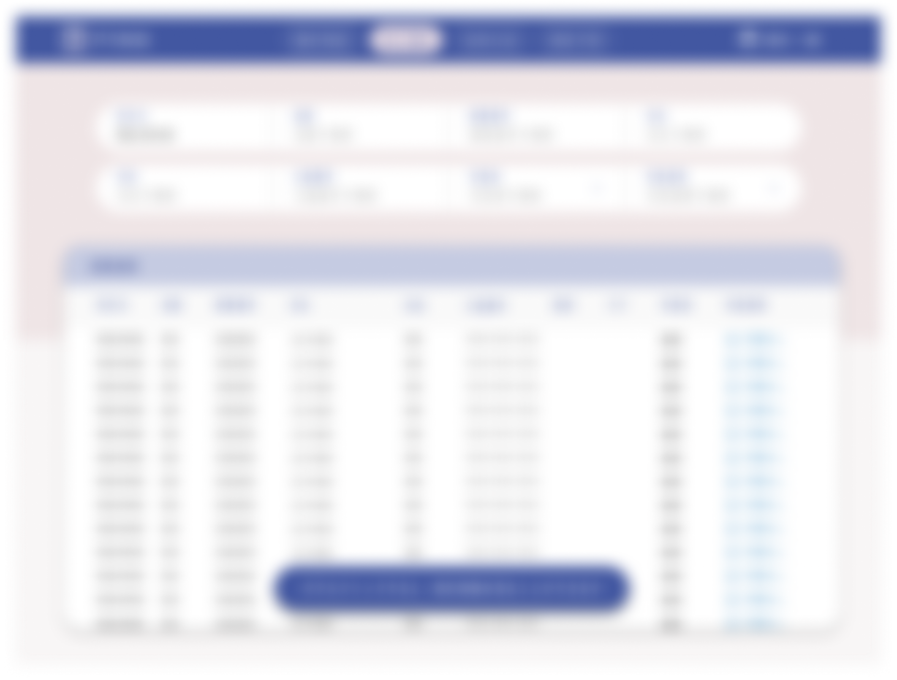

仕組みを整え、
最適な動線づくりを。
略歴

小柳 佳那子
Kanako Koyanagi
10年ほど公立や私立の小中高で美術を教える。
その際に、特別支援教育、ICTと出会い、アクセシビリティと結びつく。
情報を「伝わる形」に整理するのが好きです。
得意領域：toB業務UI、デザインシステム整備、htmlマークアップ、CSSスタイリング、文章
目標：読みやすさ・保守性・一貫性・ユーザの操作負荷を下げる設計
今後やりたいこと
-
htmlマークアップとCSSスタイリング
私は全工程の中で、htmlとCSSが一番好きです。理由は、人間とコンピューターが同じ構造・同じ結果を共有できる言語だからです。
デザインで考えた構造が、そのまま実装に反映され、誰が見ても同じUIとして表現されるところに魅力を感じています。 -
得意領域を活かして仕事をしたい
以下の図は、UIデザインにおけるデザインの五段階モデルと呼ばれるものです。
こちらを用いて私の得意領域の可視化を行っています。
図：得意なデザイン領域（UIの5段階モデルに基づく）。
特に「骨格（設計図・ワイヤーフレーム）」、「構造（情報設計）」、「要件（要件定義）」の工程に強みを持っています。 -
「地味な整備屋」をやりたい
私は環境調整や、仕組み、動線そのものを整え、「誰がやっても同じ結果になる」「タスクに取り組みやすい」環境にすることが好きです。
実務で言うと、Figmaを活用したコンポーネント設計、運用ルール策定、デザインと実装の橋渡しが得意です。
チーム全体の生産性と一貫性を高めたいです。 -
アクセシビリティを担保したい
Webやアプリケーションに関わる人間としての責務だと思っています。
特に、Webサイトは不特定多数の人々が触れる媒体です。
できる限りユーザーの操作負荷を下げることを目標にしたいです。 -
まとめ
マークアップとスタイリングへの偏愛と、元々持っているUIデザインとUXの知見 + アクセシビリティを、
よりユーザーが多いWebサイト領域で活かしたいです。
やってきたこと
-

過去の自分やお手本と見比べ、技術向上を目指すアプリのUIデザイン
導線設計から全ページのUIデザインを担当
-

釣り人が集まり、釣果を投稿することに特化したSNSアプリデザインと実装
リニューアルするにあたって、主に投稿画面の導線設計・デザイン・実装を担当
-

銀行口座の不正な取引を自動で判断し、不正取引を検知するシステムのUIデザイン
要件定義から関わる。全ページのUIを担当。
できること
-
マークアップ・スタイリング
HTML / CSSによるマークアップおよびスタイリングを行います。
静的なHTML / CSSによる実装から、Reactなどのフレームワーク環境におけるマークアップまで対応可能です。 CSSについても、素のCSSを用いた設計から、フレームワークやライブラリを活用したスタイリングまで、 実装環境に応じて適切な手法を選択しています。 -
UI・Webデザイン
アプリのUI設計やWebページのデザインから、 マークアップ・スタイリングまで一貫して対応しています。
Figmaでは、実装時の構造やコンポーネント分割を意識しながらデザインを行い、 デザインと実装の間にズレが生まれない設計を重視しています。 -
要件定義からの伴走
要件定義の段階からプロジェクトに関わり、 クライアントの要望や前提条件を整理しながら、 機能設計・画面設計、プロトタイプの作成を行います。
言葉だけでは共有しづらい内容を、 画面や構造として可視化することで、 認識のズレを防ぎ、開発を進めやすい状態をつくることを大切にしています。 -
情報設計
情報設計では、ユーザーが「考えなくても使える」状態を目指しています。
操作や情報の負荷を下げるため、 情報の整理・優先順位付け・構造化を行い、 FigJamを用いて、関係者間で共通認識を持てる形に可視化します。 -
UXリサーチ
UXリサーチを通じてユーザーの状況や行動を把握し、 課題として整理した上でUX設計へと反映しています。
リサーチ結果を目的なく並べるのではなく、 「何を設計で解決すべきか」を明確にするためのプロセスとして、リサーチを位置づけています。 -
デザイン×実装の橋渡し
JavaScriptを用いた基本的なUIインタラクションの実装や、 UIライブラリ（MUIなど）のカスタマイズ経験があります。
フロントエンドエンジニアの専門領域を担うことはありませんが、 実装の仕組みを理解した上で、 デザインと実装の橋渡しを行うことを強みとしています。
デザイン設計思考
思考の概要
-
デザインは構造を可視化するもの
私にとってデザインとは、 見た目を作ることではなく、 構造を誰にでも分かる形にすることです。
Figmaでは、実際のHTML構造を想定してAuto Layoutを組み、 余白やネスト、命名を整理することで、
デザインと実装の間にズレが生まれない設計を心がけています。
こうした設計によって、人とコンピューターが同じ構造を共有できるUIを目指しています。 -
再利用・修正・メンテナンスを前提に
UIやWebサイトは作って終わりではなく、 再利用・修正・メンテナンスされ続けるものだと考えています。
ReactやCSS Modulesなどの実装環境を想定し、 扱いやすい粒度でコンポーネントを設計・分割しています。
Variant名・クラス名・変数名はあらかじめ統一し、 誰が触っても同じ理解で扱える状態をつくることで、
将来的な変更や拡張にも対応しやすいUIを目指しています。 -
実装を前提にしたデザインを行う
一貫性を保つデザインシステム整備を通じて、
「誰が作っても同じ結果になる」仕組みを意識しています。 -
環境整備がチームの効率化の鍵である
小さな整備の積み重ねで、納期と品質を両立することを目標にしています。
figmaでのデザインとコード対応
Case1 ボタン
命名の一貫性
初歩的なことではありますが、状態による変化の管理やコンポート名の命名に一貫性を持たせることを気をつけています。
-
Figmaでのデザイン

図 : ボタンコンポーネントのバリアント表。State (Default, Hover, Focus, Disabled) と Type (Normal, Active) の組み合わせのデザインを示している -
html/CSS/JS例
See the Pen Untitled by KanakoShin (@kanakoshin) on CodePen.
-
React例
注：こちらのコードはあくまでデザインや、その命名をもとにAIで生成したReactのコードになります。本人はバリバリReact書けます！とかではないです。
See the Pen Button-React by Kanako Koyanagi (@kanakoshin) on CodePen.
Case2 カード
構造の整合性
HTML構造を考慮して、Figmaではレイヤー構造,レイヤー名（class名との一致）を決め、Auto Layoutを使用します。
-
Figmaでのデザイン
図 : カードコンポーネントのレイヤー構造一覧（Block: card, Element: card__thumbnailなど） -
html/CSS/JS例
See the Pen Untitled by Kanako Koyanagi (@kanakoshin) on CodePen.
Case3 フォーム
状態管理と再利用性
状態（default / focus / filled / error / disabled）を Variant として設計し、実装する際の状態管理と対応づけます。
-
Figmaでのデザイン

図 : ログインフォームにおける各インタラクション状態（未入力・入力中・エラー発生時等）のデザインパターン -
html/CSS/JS例
See the Pen form by Kanako Koyanagi (@kanakoshin) on CodePen.